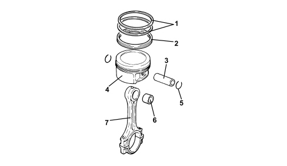

GENERAL REMARKS - PISTONS AND CONNECTING RODS
- Path
- Descriptions > 10 ENGINE > 1028 PISTONS AND CONNECTING RODS > GENERAL REMARKS - PISTONS AND CONNECTING RODS
- Kind
- system description
- Applies to
- engines: 2.2; all production periods
- Interactive page
- https://sloeber94.github.io/elrnDB-fCrm/en/#/194002108
Applies to: engines: 2.2; all production periods
SPECIFICATIONS
The pistons are produced by aluminium alloy casting; the connecting rods are made from hardened and tempered steel, produced by hot pressing.
The connecting rod caps are the fracture type joined by pressure using bolts, together with the half-bearings. The pistons and small ends are connected by means of a bush and pin kept in place by two circlips.
Since the connecting rod caps are produced by facture, each cap matches perfectly with the connecting rod that it comes from. When refitting the connecting rod caps, each cap must be matched with the connecting rod to which it belongs in order to prevent damage due to the imperfect matching of the surfaces.

1. Piston rings
2. Oil scaper ring
3. Gudgeon pin
4. Piston
5. Piston rings
6. Bush
7. Connecting rod